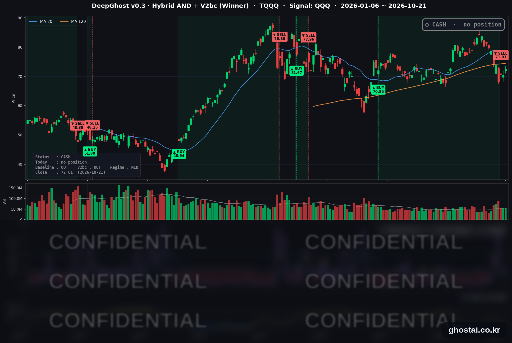

대형 기술주 주도로 나스닥 1.05% 상승, S&P 500 상승 종목은 55%
· Ghost.AI 데일리 리포트
👻 매일 시그널과 히스토리를 홈페이지에서 한눈에 → www.ghostai.co.kr
회원 페이지 안내 — 회원 가입하시면 커버리지 전 종목의 원본 시그널과 분석 레포트를 매일 확인하실 수 있습니다. 회원 페이지는 블로그·유튜브보다 먼저 업데이트됩니다. 지금 베타 회원을 받고 있으며, 이메일과 필명만으로 가입하실 수 있고 서비스 사용료는 받지 않습니다. 이메일 확인 후 바로 이용하실 수 있습니다.
한 줄 요약: 수요일 미국 증시는 대형 기술주가 다시 상승을 이끌어 나스닥 종합이 1.05% 올랐지만, S&P 500 구성종목 중 오른 종목은 55%로 전일(81%)보다 줄었습니다. 5년물 이상 국채 금리가 올랐고 VIX 는 내렸습니다. 전략은 현금 보유 사흘째이며, 오늘 새 신호는 없습니다.
📊 오늘의 매매 신호
| 항목 | 내용 |
|---|---|
| 오늘의 신호 | 🟡 신규 신호 없음 — 전략은 현금 보유를 유지합니다 |
| 포지션 상태 | 💵 현금 보유 중 (OUT OF POSITION) |
| 현금 보유 기간 | 2026-10-19 ~ (3일째) |
| TQQQ 종가 | $72.61(+3.12%) |
TQQQ 시그널 — OUT OF POSITION
현재 상태: 현금 보유 중 | 신규 신호 없음

전략은 10월 19일(월) 미국 장 시가 71.01달러에 TQQQ 를 매도한 뒤 현금 보유 사흘째입니다. 직전 거래는 8월 6일 시가 70.85달러에 매수해 51거래일 보유했고, 전략 수익률은 +0.23% 였습니다.
TQQQ 는 10월 21일 3.12% 오른 72.61달러로 마감했습니다. 10월 15일 이후 가장 높은 종가이고, 매도 가격보다 2.25% 높습니다.
기술주가 강하게 오른 날이지만 전략은 새 신호 없이 현금 보유를 이어 갑니다. 전략의 신호는 나스닥 100 지수를 따르는 QQQ 를 기준으로 계산하므로, 시장 전체보다 나스닥 대형 기술주의 흐름이 전략에는 더 중요합니다.
오늘 미국 시장 — 시황 요약
지수 마감
| 지수 | 종가 | 등락률 |
|---|---|---|
| S&P 500 | 7,757.17 | +0.58% |
| 나스닥 종합 | 26,702.86 | +1.05% |
| 다우존스 | 52,856.09 | +0.69% |
| 러셀 2000 (IWM) | 276.48 | +0.25% |
| QQQ (나스닥100) | 725.20 | +1.05% |
| TQQQ | 72.61 | +3.12% |
| 반도체 ETF (SOXX) | 510.36 | +2.07% |
이날 상승은 정보기술 업종(등락률 중간값 +1.37%)에 몰렸고, 반도체 ETF SOXX 는 10월 2일 이후 가장 크게 올랐습니다. QQQ 725.20 은 10월 15일 이후 가장 높은 종가입니다. 헬스케어·부동산·경기소비재·필수소비재·커뮤니케이션 서비스는 전일 상승에서 하락으로 돌아섰습니다. 사상 최고 종가를 낸 지수는 없고, S&P 500 은 10월 6일 최고 종가보다 0.79% 낮습니다.
국채 금리 동향
| 만기 | 10/20 종가 | 10/21 종가 | 전일 대비 |
|---|---|---|---|
| 3개월 | 4.080% | 4.063% | -1.7bp |
| 5년 | 4.935% | 4.972% | +3.7bp |
| 10년 | 5.117% | 5.146% | +2.9bp |
| 30년 | 5.425% | 5.439% | +1.4bp |
3개월물만 내리고 5년 이상 만기는 모두 올랐습니다. 5년물과 10년물은 10월 14일 이후 가장 높은 종가입니다. 이날 나온 미국 경제 지표는 MBA 주택담보대출 신청 건수(-5.3%)뿐이라 금리 상승을 설명할 지표는 없었고, 장 후반 미 국무부의 걸프 지역 공관 인력 철수 준비 보도 뒤 국채 가격이 내렸다는 보도가 있었습니다. 10년물과 3개월물의 차이는 108.3bp(전일 103.7bp)로 벌어졌고, 커브는 역전 없는 우상향입니다. 재무부 자료 기준 2년물은 4.79%에서 4.81%로 올랐습니다. 금리가 오른 날에도 대형 기술주는 올랐습니다.
연준 발언 & 금리 패스
- 발언 없음 — 연준은 10월 17일(토)부터 10월 29일(목)까지 FOMC 전후 발언 금지 기간입니다.
- FOMC 는 10월 27~28일에 열리고, 금리 결정은 28일(수) 오후 2시(미 동부)에 나옵니다. 정책금리는 3.75~4.00%입니다.
- 회의 전까지 금리 기대는 경제 지표와 채권 금리로 움직입니다. 오늘 3개월물이 내려 단기 금리 기대에는 큰 변화가 없었습니다.
오늘의 핵심 이슈
- 대형 기술주가 다시 상승을 이끌었습니다. 나스닥 종합이 1.05% 올라 S&P 500(+0.58%)과 러셀 2000(IWM, +0.25%)보다 많이 올랐습니다. 하루 전에는 구성종목 81%가 오르고 대형 기술주가 내렸지만, 이날은 정보기술이 가장 강했고 오른 종목은 55%였습니다. 커뮤니케이션 서비스는 19종목 중 2개만 올랐습니다. AT&T 가 3분기 후불 휴대폰 가입자 순증이 시장 예상에 못 미쳐 6.45% 내렸고, 다른 통신사들도 함께 내렸습니다.
- 스페이스X 실적과 합병 검토 소식에 테슬라가 3.41% 올랐고, 장 마감 후 메타는 예상보다 높은 4분기 매출 전망을 냈습니다. 스페이스X 의 3분기 매출은 146억 달러로 시장 예상(약 127억 달러)을 웃돌았고, 머스크 CEO 는 스페이스X 와 테슬라가 합병을 검토할 특별위원회를 각각 만들었다고 밝혔습니다. 테슬라는 장 마감 후 조정 주당순이익 0.48달러로 예상(약 0.45달러)을 웃돌았지만 영업이익은 1년 전보다 56% 줄었고, 시간외 주가 반응은 보도마다 엇갈렸습니다. 메타는 3분기 매출 646억 달러(+26%)에 4분기 매출 전망 730억~760억 달러를 제시해 예상(약 737억 달러)을 웃돌았고, 시간외 거래에서 3~5% 올랐습니다. 두 회사 실적에 대한 정규장 반응은 22일(목)에 나옵니다.
- 국채 금리가 올랐고, 사우디 유전 공격 소식에도 유가는 크게 움직이지 않았습니다. 사우디 에너지부는 아람코 샤이바 유전을 노린 드론을 요격했고 운영에는 영향이 없다고 밝혔습니다. 미 국무부는 사우디 주재 비필수 인력과 가족에게 출국 명령을 내렸습니다. 원유 ETF USO 는 0.50% 내렸습니다.
변동성 & 투자심리
VIX 는 3.64% 내린 16.68 로 10월 15일 이후 가장 낮은 종가를 기록했습니다. CNN 공포탐욕지수는 31.4 로 전일(27.2)보다 올랐지만 아직 '공포' 구간입니다. 구성지표 중 주가 강도·시장 폭·풋/콜 비율·안전자산 수요는 '극단적 공포'에 머물렀습니다.
매크로 & 원자재
| 품목 | 종가 | 등락률 |
|---|---|---|
| 원유 ETF (USO) | $159.80 | -0.50% |
| 금 ETF (GLD) | $378.95 | +0.34% |
- 유가: USO 기준 2거래일 연속 내렸습니다. 사우디 유전 공격과 국무부 출국 명령 보도에도 반응은 작았습니다.
- 금: GLD 는 0.34% 올라 3거래일 연속 하락을 멈췄습니다.
주요 종목 동향
| 종목 | 종가 | 등락률 | 비고 |
|---|---|---|---|
| TSLA | 386.47 | +3.41% | 7/16 이후 최고 종가, 장 마감 후 3분기 실적 |
| NVDA | 221.97 | +2.54% | 9/17 이후 가장 큰 상승 |
| MU | 913.67 | +1.96% | |
| INTC | 92.96 | +1.39% | |
| AAPL | 343.99 | +1.32% | 사상 최고 종가 |
| QCOM | 177.96 | +1.28% | |
| AVGO | 337.80 | +1.03% | |
| META | 697.52 | +0.47% | 5거래일 연속 하락 멈춤, 장 마감 후 3분기 실적 |
| MSFT | 532.95 | +0.20% | |
| AMZN | 262.37 | -0.10% | |
| GOOGL | 334.76 | -1.62% | 9/10 이후 최저 종가 |
| NFLX | 65.04 | -5.31% | 실적 다음 날, 2024년 8월 이후 최저 종가 |
커버리지 12종목 중 9종목이 올랐습니다. 내린 세 종목(GOOGL·AMZN·NFLX)은 이날 약세였던 커뮤니케이션 서비스·경기소비재 업종입니다.
다음 일정 (미 동부시간)
- 10/22(목) 08:30 주간 신규 실업수당 청구건수 / 장 시작 후 테슬라·메타, 장 마감 후 실적을 낸 텍사스인스트루먼트·IBM·램리서치에 대한 정규장 반응
- 10/23(금) 09:45 S&P Global 10월 제조업·서비스업 PMI 잠정치
- 10/27~28 FOMC, 금리 결정 28일(수) 14:00 (발언 금지 기간 10/17~10/29)
Ghost.AI — Quantitative AI Investment
Model: DeepGhost v0.3 | Transformer-Based Deep Learning
Coverage: 14 tickers | Updated every trading day after US market close
⚠️ 본 자료는 정보 제공 목적으로만 작성되었으며 투자 권유가 아닙니다. 모든 투자의 책임은 투자자 본인에게 있습니다. 과거 성과가 미래 수익을 보장하지 않습니다.
[유의사항]
- 본 서비스는 불특정 다수를 대상으로 발행되는 단방향 정보 제공 서비스이며, 투자자 개인의 재산 상황·투자 목적·위험 선호도를 반영한 개별 투자 조언이 아닙니다.
- 고스트에이아이 주식회사는 고객과 쌍방향 의사소통(개별 상담, 맞춤형 자문 등)을 제공하지 않습니다.
- 본 콘텐츠는 투자 권유 또는 매매 주문의 청약·청약의 권유에 해당하지 않으며, 최종 투자 판단 및 그에 따른 손익의 책임은 전적으로 투자자 본인에게 있습니다.
고스트에이아이 주식회사